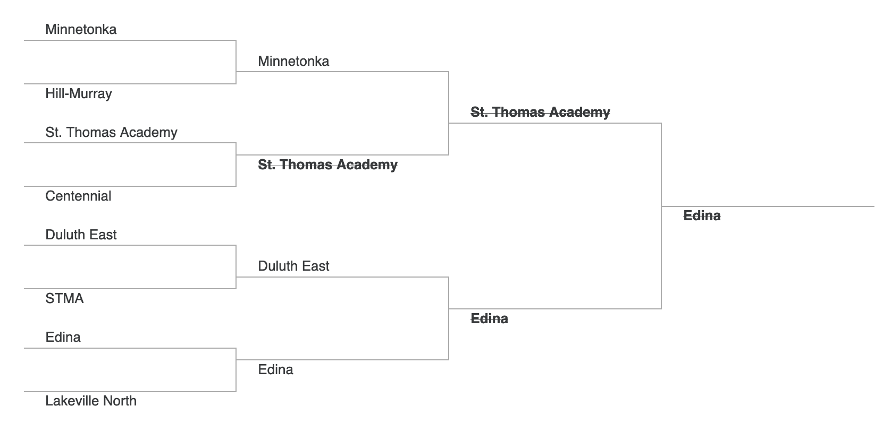

./assets/body-header.qmd
In two previous posts, post 1 and post 2, I used Monte Carlo simulation to predict the winner of the 2018 Minnesota State High School Boys Hockey tournament. Now that the tournament is over, I wanted to analyze how the model did and also think about ways to improve the predictions should I want to re-run such a simulation in the future.
Accuracy of the Predictions
So, how well did the simulation do in predicting the state tournament champion? Orono was the winner of the Class A tournament. Before the tournament started I gave them a 16% chance of winning the state tournament. This was the third highest percentage, but was not that different than the other two higher percentages (Hermantown: 20% and Mahtomedi: 18%). In the Class AA tournament, the winner was Minnetonka. Again, there were two teams that had a higher percent chance of winning, but only by about 1–2%.
This seems pretty good. If I look at the teams that made the final four, three of the top four predictions in the Class A tournament made the semifinals, and the same in Class AA. Before I get too excited about this, it is interesting to note that if you had picked the top four seeds in each class to make the semifinals you would have done just as well.
Picking the Bracket Based on Elo Ratings
How well might we have done if we had just used the Elo ratings to fill out our bracket? Below is a bracket with the Elo predicted winners. Predictions that would have been wrong have a strikethrough.
Class A Tournament

Class AA Tournament

We wouldn’t have done very well. This is not, perhaps, surprising as the Elo ratings for many of the top teams are quite similar. Thus upsets will likely happen. In addition, these are high school players, and the emotion of playing in the state tournament is not factored into any rating system.
Improvments for the Future
Before I suggest ways to improve the predictions, I want to state that I am a little uneasy about predicting high school games. I took this on as an exercise in learning and a fun augmentation to my viewing of the state tournament. That being said, here are things I would like to do in the future.
- Simulation Speed: The first thing I would improve would be the simulation speed. I did a quick code using a
for()loop. This is incredibly slow. I think this could be improved using functionality from the purrr package. - Dynamic Parameters in the Elo Ratings: I used a static \(K\)-factor of 15 in computing the Elo ratings. I could have upweighted certain games using diffeent values of \(K\). For example, conference games and section playoff games could have used higher weights.
- Predict Elo within Class: I computed the Elo ratings by considering all the teams in the state. I think it might be useful to explore predicting Elo within class. This could be either used directly, or weighted and combined with the overall Elo rating in some fashion.
- Predict Probabilites for Other Events: Aside from predicting the probability of winning the tournament, I might predict probabilities of making the semifinals or finishing in the top 3.
- Consider Other Rating Models: It might be interesting to use a rating system such as Glicko that includes an uncertainty parameter.